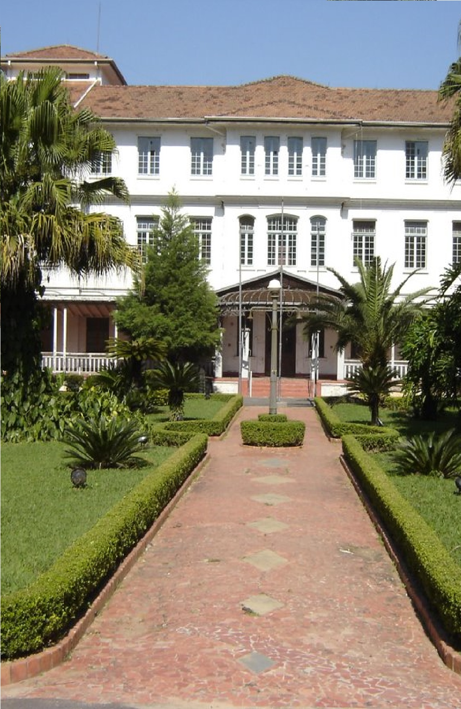
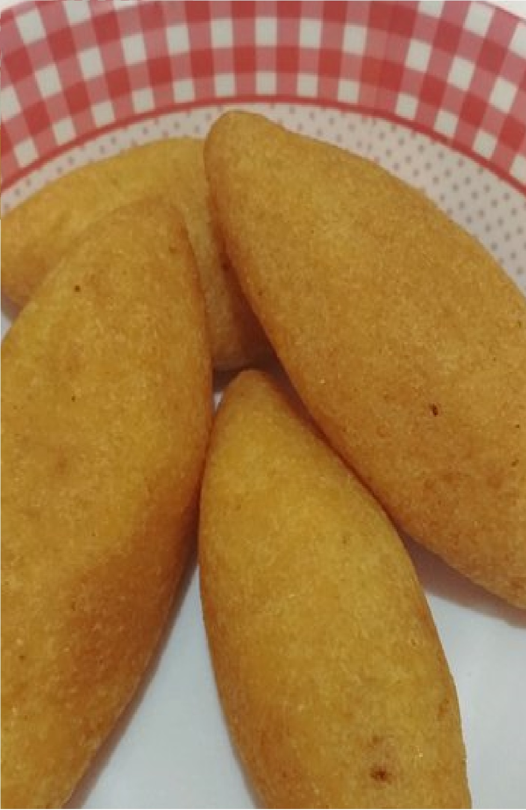
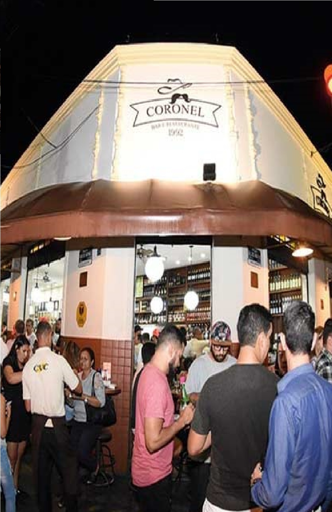

Bem-Vindo! à São José Dos Campos!
São José dos Campos


Está na hora de descansar, e relaxar a cabeça depois de um longo mês de trabalho duro, mas não se esqueça de visitar os pontos turísticos da nossa cidade. O Parque Vicentino Aranha é um ótimo lugar para visitar, dentre muitos outros pontos da nossa cidade.

Está com fome? Não se preocupe, a culinária da nossa cidade é muito boa! Aqui você encontra tudo o que precisa para se alimentar. E não esqueça de deixar um espacinho para o nosso famoso bolinho caipira.

Está tarde, mas não precisa ir embora, conheça as possibilidades de diversões noturnas que a cidade tem há oferecer.
A Embraer é uma empresa de construção e desenvolvimento de aeronaves brasileira, fundada em 18 de setembro de 1892, com sede aqui, na nossa cidade. Venha nos conhecer e conhecer a nossa história.
SJC É Tudo Isso?

Sim, e muito mais! São José dos Campos é a cidade no vale do paraiba que mais se desenvolve e que mais se destaca por sua cultura, seu patrimônio cultural, seus pontos turístico e por sua grande taxa de empregabilidade por diversas empresas serem sitiadas aqui.
Por Que Vir Para SJC?
Se procura uma cidade com boas e grandes oportunidades de negócios, São José dos Campos tem movimentos constantes de pessoas de duas da maiores metrópoles do país, sendo elas o Rio de Janeiro para quem deseja vir pela costa do país, e de São Paulo para quem deseja as belas vistas que a Dutra proporciona.